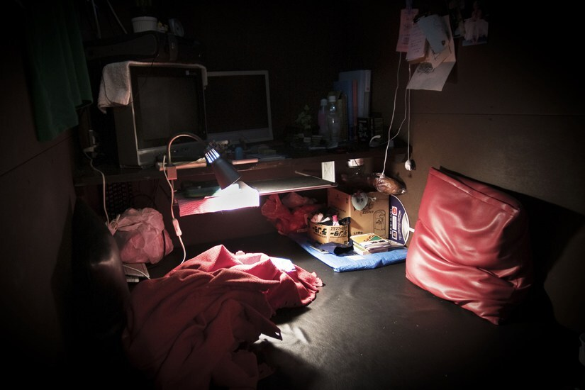

На TJ небольшая статья о том, как считавшуюся мёртвой китаянку обнаружили в интернет-кафе, где она прожила десять лет.
Девушка ушла из дома в 2005 году, когда ей было 14 лет, и до 20 ноября этого года она считалась погибшей, пока её не обнаружили в интернет-кафе во время полицейского рейда.
В статье приводится в пример ещё один случай 2013 года про китайца, который прожил в интернет-кафе 6 лет, выходя из него только для принятия душа.
У того явления есть свой термин — Net Cafe Refugees («интернет-кафе-беженцы») или Cyber-homeless («Кибер-бездомные»). Так в Японии называют бездомных людей, которые не имеют постоянного места жительства и обитают в круглосуточных интернет-кафе или манга-кафе (кафе, где можно почитать мангу).
Такие кафе обычно использовались пассажирами, которые пропустили последний поезд, или бизнесменами, которые хотят переждать несколько часов. В некоторых кафе имеются душевые и даже продают нижнее бельё. Со всеми своими услугами интернет-кафе являются дешёвой альтернативой отелям, а некоторым японцам и заменой дома.
В настоящее время в Японии около 38% процентов рабочих имеют временную работу. Их зарплаты слишком малы, чтобы арендовать себе собственное жильё, поэтому они решают жить в интернет-кафе.
Посмотрите небольшой короткометражный фильм про всё это:
Есть ещё похожий феномен, который больше распространён в Гонконге, — McRefugees («МакБеженцы»). Он относится к тем, кто ночует в круглосуточных МакДональдс по такой же причине, как и интернет-кафе-беженцы.